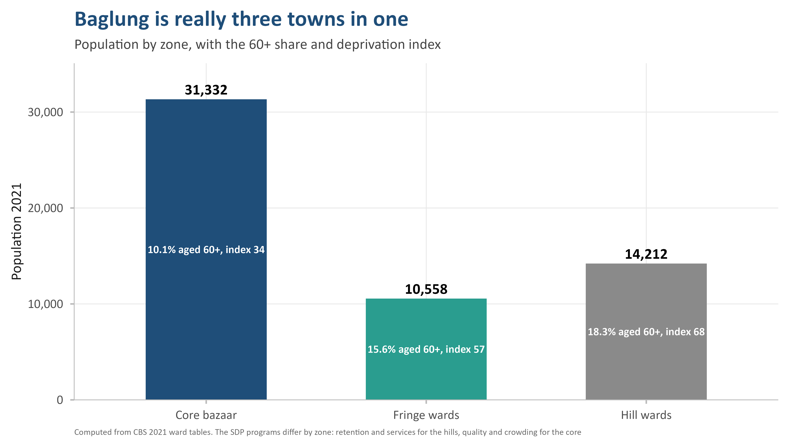
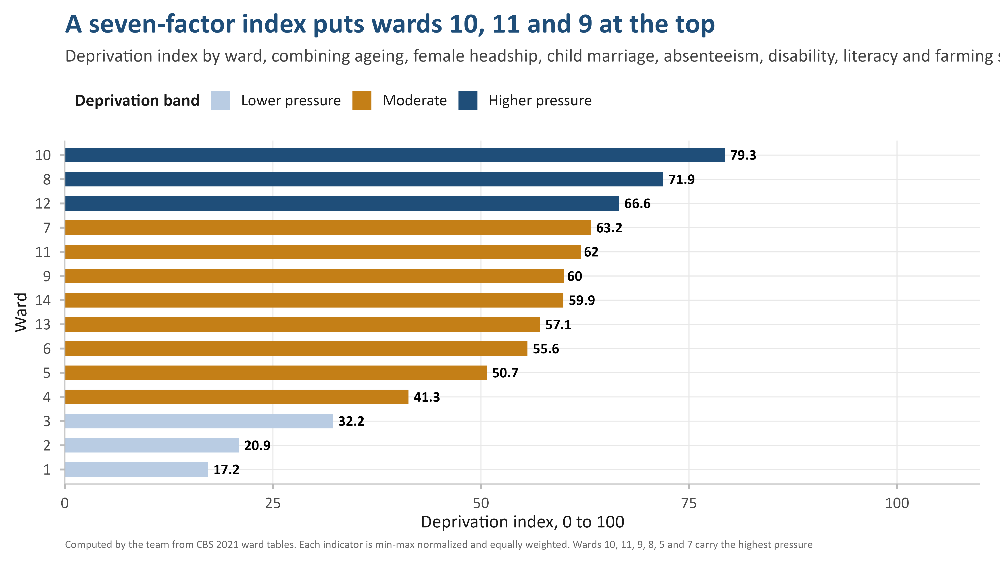
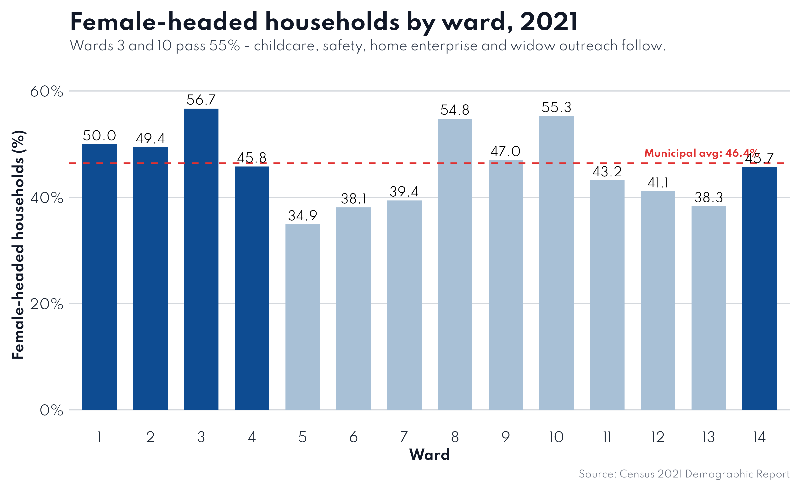
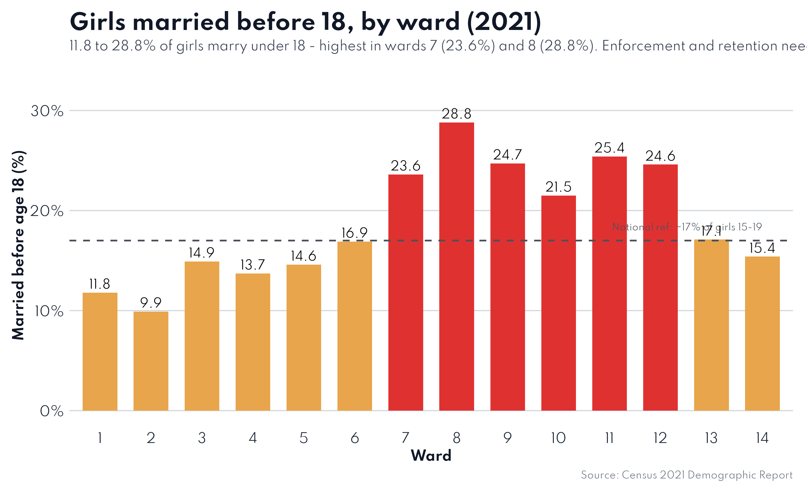
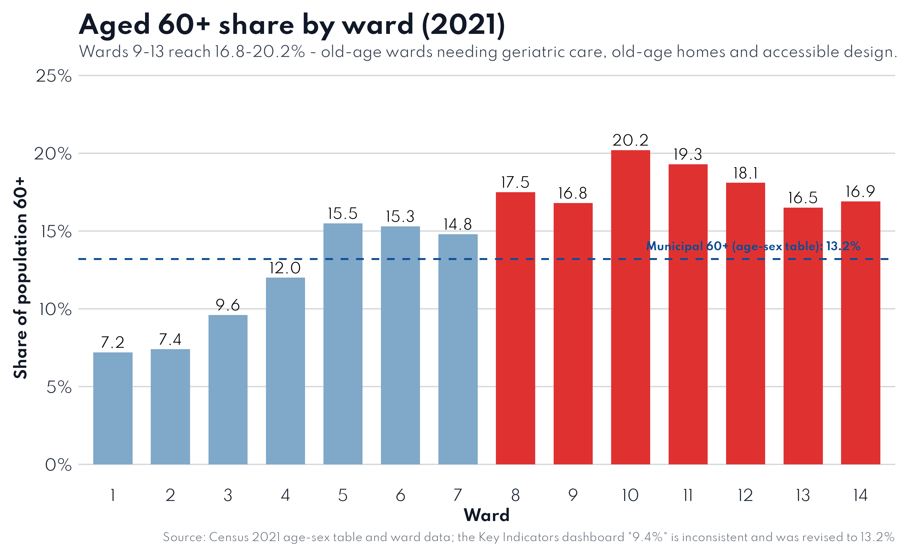
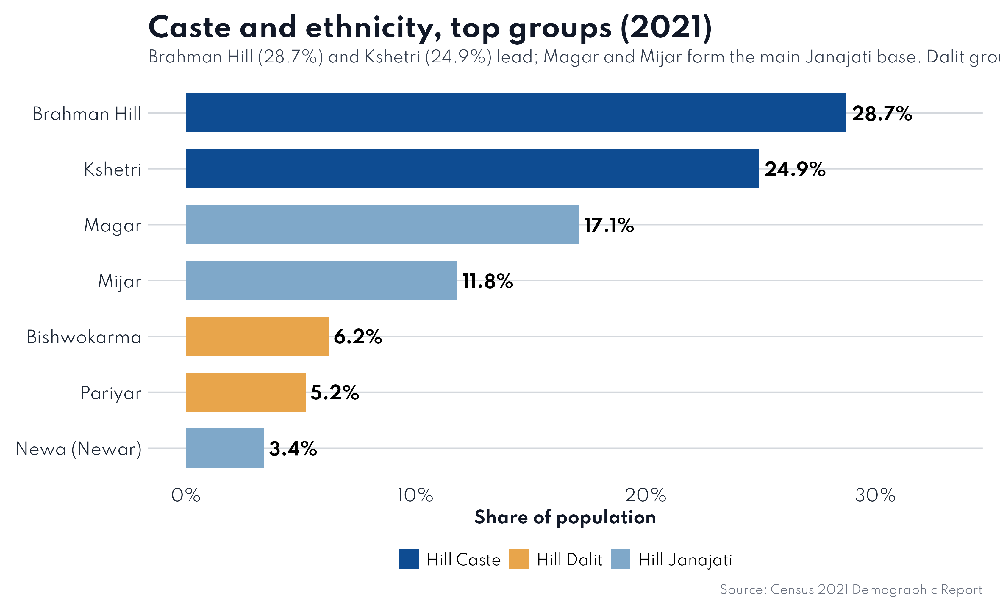
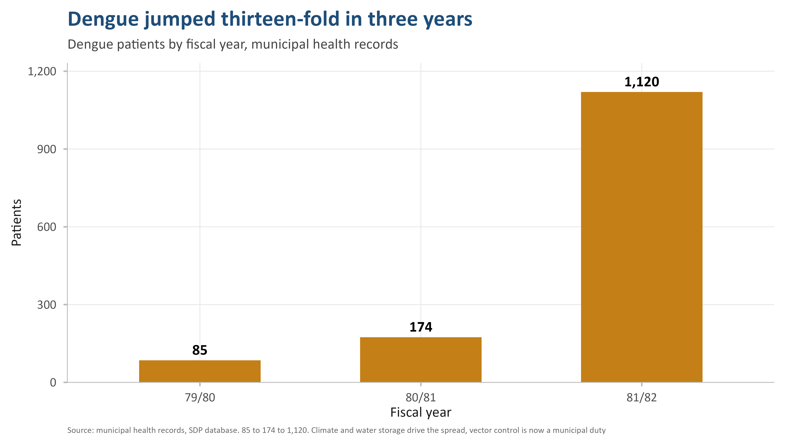
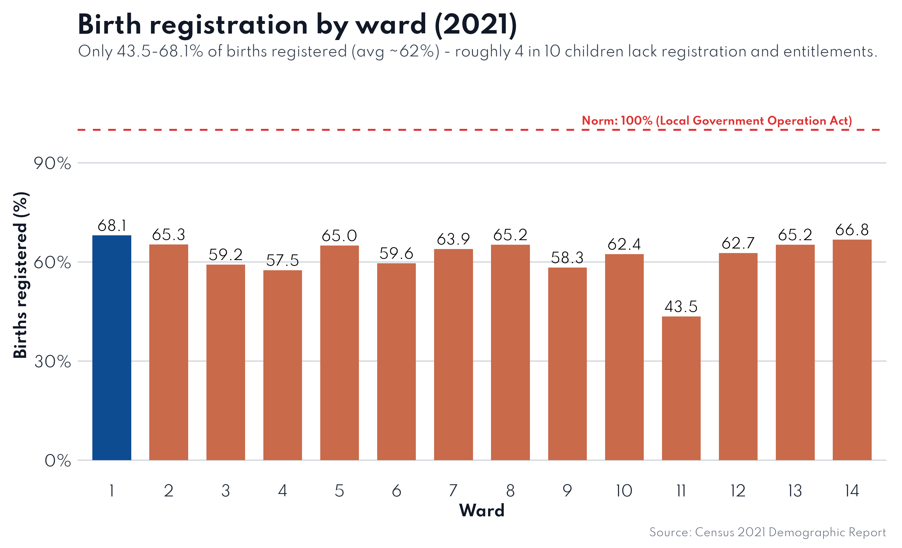

The SDP reads demography, social composition, health, education, economy, migration and safety against national norms, then distils it into eight auditable policy streams built for women-led households and the ageing hills.
The SDP's central structural insight is that Baglung is not uniform — its three zones face different problems and need different policies.

31,332 people, most services, ~53% of people on ~16% of land. The engine — and the congestion.
10,558 people — the transition belt absorbing core spill-over and rural newcomers.
14,212 people, losing fastest. Highest deprivation, oldest population, lowest literacy — the priority.

From the committee defence deck — the concrete, zone-aware commitments the plan makes. Each responds directly to the numbers.
Wards 9–13 cross 25–31% aged 60+ by 2031. Old-age home, home care, accessible footpaths, geriatric beds and senior-friendly bus stops.
Plan ~1,100–1,500 more homes by 2036 at 3.5 persons/HH; 40–100 m² lots suit the 43–61% nuclear-family pattern.
The 5–14 cohort shrinks 26%. Hill schools under 300 students consolidate (wards 5, 6, 11) while the core absorbs demand.
100% birth-registration norm — ~2,800 children miss out over the decade. Enforce the legal marriage age, prioritise wards 7, 8, 9.
The 15–34 pool is replenishing; skills centres, jobs and return-migration incentives decide whether it stays.
Internet ~47% (wards 8–11 <40%) and female literacy 77% are the two biggest norm gaps besides registration.
~7,550 female-headed households and 13% widow shares in rural wards: childcare, safety, home enterprise, widow outreach.
Density zoning for the 70:1 spread; infrastructure-led growth on the Odarchaur–Kudule axis (Ward 4, +40.1%).





